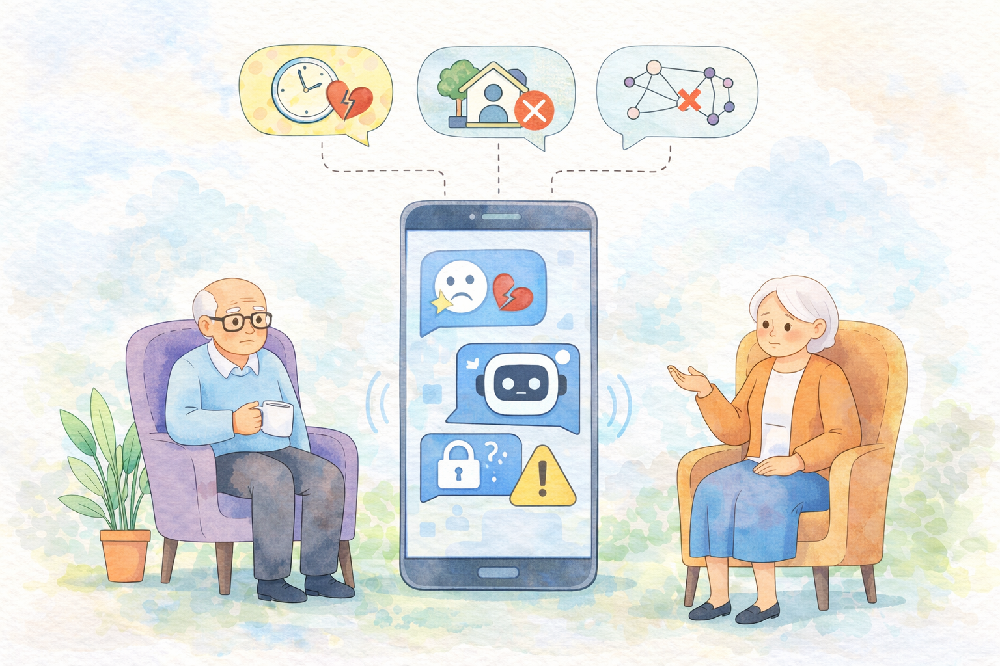

[TO APPEAR IN DIS 2026 - FULL PAPER]
Designing with Tensions: Older Adults' Emotional Support-Seeking Under System-Level Constraints in Conversational AI
TL;DR: Interviews with 18 older adults show that they often turn to conversational AI for emotional support when human support feels inaccessible, but safety interventions such as redirection or interruption can feel abrupt, undermine emotional pacing, and reduce users' sense of agency. The work argues for emotionally supportive AI systems whose safety mechanisms better align with older adults' social contexts and lived experiences.